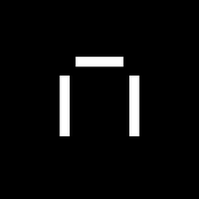

Найти
Ошибка 404. Нет такой страницы
Если вы считаете, что страницы нет по нашей вине,
напишите нам
.
Маркет
— смартфоны Huawei
Плюс
— теперь и для семьи
Музыка
— подкасты где угодно
Кинопоиск
— Нулевой пациент

Практикум
— стать аналитиком
Едадил
— скидки в супермаркетах
Толока
— удаленный заработок